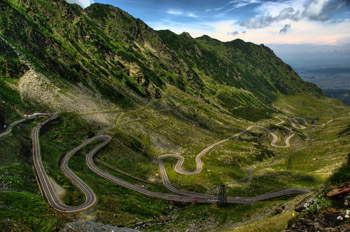
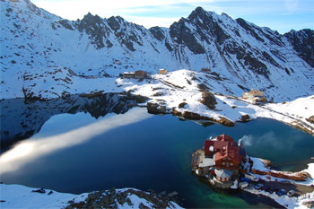
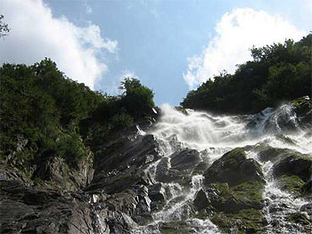

Muntii Carpati: Prezentare generala
Cu dispunere circulara, inchid in mijlocul lor un podis inalt de 400-600 m, cu aspect deluros, marginit de un lant de depresiuni. Carpatii au altitudini ce depasesc adesea 2.000 m, iar la varfurile principale au peste 2.500 m. La exterior, Carpatii sunt inconjurati de culmi subcarpatice si dealuri. Comparativ cu alte lanturi muntoase, Carpatii au o masivitate mai redusa datorita multiplelor vai transversale ce ii fragmenteaza, a depresiunilor si culoarelor depresionare. Culmile au, in general, aspect rotunjit si chiar netezit. In muntii inalti apar insa creste ascutite, relieful prezentand trasaturi alpine. Carpatii poarta urmele glaciatiunii pleistocene, circurile, vaile si lacurile glaciare sporind frumusetea peisajului muntos. Varietatea litologica (de roca) determina si ea o mare varietate si o spectaculozitate a reliefului carpatic. Cele trei mari unitati carpatice aflate pe teritoriul Romaniei sunt: Carpatii Orientali (Rasariteni), Carpatii Meridionali, Carpatii Occidentali.
Muntii Fagarasului formeaza un masiv muntos din categoria Carpatilor Meridionali si detin cel mai inalt varf montan din Romania - varful Moldoveanu.
Muntii Fagaras se intind pe aproximativ 70 km la nord, 45 de km la sud si sunt delimitati de Valea Oltului la vest, iar la est de raul Dambovita.
Pe cuprinsul muntilor Fagaras, se gasesc 8 varfuri de peste 2500m: Moldoveanu cu 2.544 m, Negoiu cu 2.535 m, Vistea Mare cu 2.527 m, Caltun-Lespezi cu 2.522 m, Vanatoarea lui Buteanu cu 2.507 m, Cornu Caltunuluicu 2.510 m, Hartopu cu 2.506 m, Dara cu 2.501 m.
Exista, de asemenea varfuri avand peste 2.400 m si mai mult de 150 de varfuri de peste 2.300 m.
O caracteristica a acestor munti o reprezinta numeroasele lacuri glaciare si alpine situate la mari altitudini. Cele mai importante si cunoscute sunt lacul glaciar Balea si lacul Capra, Balea Lac.
Muntii Fagaras sunt traversati de soseaua Transfagarasan, cea mai inalta din Romania.
 Transfagarasan, denumit "drumul printre nori", este cea mai importanta sosea din Romania, dar si una dintre cele mai spectaculoase din Europa.
Soseaua Transfagarasan a fost construita intre anii 1970 - 1974. In acest scop, s-au excavat peste 3 milioane de tone de piatra si se spune ca munca asidua, alunecarile si surparile de teren au inghitit sute de vieti, dar nu exista acte doveditoare in acest sens.
La finalizarea constructiei, Transfagarasan avea 92 de kilometri de sosea, 27 de viaducte si poduri, iar tunelul Capra-Balea este cel mai lung din tara noastra - 887 metri.
Se spune ca, la construirea tunelului de pe soseaua Transfagarasan, minerii care se ocupau cu montarea explozibilului pe munte se tineau de mana, alcatuind un sir de 20 – 30 persoane, ca sa nu fie luati de vijelie si aruncati in prapastie.
Datorita vremii vitrege si a ninsorilor abundente care se mai pornesc chiar si in luna iulie, soseaua Transfagarasan se deschide la 1 iunie si se inchide pe 1 noiembrie.
Varful Moldoveanu este cel mai inalt varf muntos din Romania, situat in masivul Fagaras, Carpatii Meridionali.
Altitudinea sa este de 2544 de metri si poate fi vazut doar de pe creasta Fagarasului, din cauza crestelor de peste 2400m altitudine din jurul sau.

Lacul glaciar Balea se afla in muntii Fagaras, la o altitudine de 2034 de metri.
Dimensiunile acestuia sunt: 360 m in lungime, 240 m latime, cu o suprafata totala de 46508 metri cubi si o adancime maxima de 11,5 metri.
Pe timpul verii se poate ajunge la Balea Lac pe soseaua Transfagarasan, cea mai spectaculoasa din tara noastra.
Puteti vizita in Balea Lac: Lacul Capra,Cascada Balea sau puteti opta pentru un traseu pana la Varful Moldoveanu.

Cascada Balea este una din cele mai impresionante cascade din Romania.
Aceasta se situeaza in muntii Fagaras, pe sosea Transfagarasan, la 9 km delacul glaciar Balea.
Cascada Balea, denumita Urlatoarea Balei, este situata intre varfurile Moldoveanu si Negoiu, iar apa sa are o cadere de 50-60 de metri.
La mica distanta de cascada, turistii pot innopta la Cabana Cascada de 2 stele, de unde porneste si linia de telecabina ce strabate un traseu de 3800 m pana la Balea Lac.